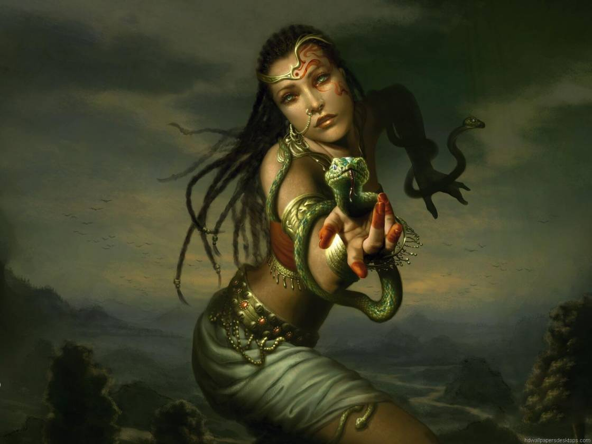

How did Durgawati Devi help Bhagat Singh?
Bhagat Singh shot John Saunders, a 21-year-old police officer, several times in Lahore. Then, he had to escape to Calcutta with his friends. Two days after the incident, Sukhdev summoned Durgawati Devi for help. Police were then looking for a bearded Sikh. So, Singh shaved his beard, trimmed his hair and put on an western attire with a ‘hat’. Even Devi could not recognise him at first. Together, they boarded a train where Devi carried her own infant and pretended to be Singh’s wife. Rajguru pretended to be their servant. Chandrashekhar Azad also sat in another compartment, dressed as a saint and escaped.
HISTORY
Quark by Abhigyan
7 July, 2020
Which Indian soldier survived nearly 20 bullets in the Kargil War?
Three bunkers of Tiger Hill, captured by Pakistan, were located in a 1000 feet high snow-covered cliff. 18 Indian grenadiers led voluntarily by ‘Yogendra Singh Yadav PVC’ went. As Yadav climbed, he installed ropes. In half-way, enemies fired at them. Despite taking three bullets in the throat and shoulder, he climbed the remaining 60 feet and entered the first bunker. He killed four enemies with grenades, enabling his team to climb. Yadav and two soldiers attacked the second bunker, killing four Pakistani soldiers in hand-to-hand fights. He survived nearly 20 bullets and grenade cuts, winning over the ‘Tiger Hill’.
HISTORY
Quark by Abhigyan
2 July, 2020

Why does the Leaning Tower of Pisa not fall?
The Leaning Tower of Pisa, located in Pisa, Italy has seven bells inside it – each representing one note of the musical major scale. It had started tilting when the third story was being built in 1178 due to the soft soil which could not support the tower’s weight. Remedial work between 1993 and 2001 reduced the tilt from 5.5 to 3.97 degrees. It has survived major earthquakes because of the dynamic soil-structure interaction that prevents the tower from resonating with earthquake ground motion. The same soft soil that brought the tower to the verge of collapse has helped it survive.
HISTORY
Quark by Satabdi
27 May, 2020

Do you know the first computer programmer was a woman?
Ada Lovelace, born in 1815, grew up loving numbers and became a wonderful mathematician. In 1834, Charles Babbage invented a computer called the 'Analytical Engine' which could not be built due to lack of finance. Lovelace was asked to translate Babbage's transcribed lecture on his machine from French to English. Surprisingly, she understood the machine better than Babbage and her translated notes were three times longer. She wrote a program to calculate Bernoulli numbers (using loops) and understood that machines can produce music, graphics and much more. She died at the age of 36, never knowing that the programmable Analytical Engine worked in 2002.
HISTORY
Quark by Abhigyan
26 May, 2020

How did the Dodo become extinct?
In Portuguese, 'Dodo' means 'stupid'. Dutch explorers discovered this bird when they took possession of the 'Mauritius' island in the 16th Century. Dodos weighed up to 23 kgs, and because of their heaviness, they could neither fly nor run fast. Dodos became easy prey not only for animals but also for humans. Ship rats and other animals brought by the Dutch sailors ruthlessly ate Dodo eggs and also outcompeted the birds for food. Within a century, Dodos became extinct. The metaphor 'As dead as Dodo' is now used in the English language to mean something obsolete or something not relevant anymore.
HISTORY
Quark by Runima
19 May, 2020

Was tomato ketchup a drug in history?
Yes. Tomato ketchup in the 1830s was sold as a medicine. A man, Dr. John Cook Bennett proposed that ketchup can be used as a drug for curing ailments like jaundice, diarrhea and indigestion. People readily accepted his idea and it soon became a huge market. Even 'tomato pills' were sold! The market was so competitive that it ultimately crashed in two decades. Thus, we got introduced to tomato ketchup in a completely different way. Do you know an average American eats 71 pounds of ketchup per year?
HISTORY
Quark by Abhigyan
8 May, 2020
How powerful was the Ahom Dynasty?
The Mughals ruled for nearly 330 years, the Mauryas nearly 137 years and the Guptas nearly 230 years. But, the Ahoms ruled for 598 years and defeated the mighty Mughals 17 times. When the Mughals captured Guwahati, it was later recovered by Lachit Borphukan. In 1671, in the Battle of Saraighat, the Ahom army was grossly outnumbered against the Mughals. Lachit Borphukan, the Ahom commander-in-chief, got a wall for fortification erected within a single night. This strategy forced the Mughals into naval warfare on the Brahmaputra river where the Ahoms had a competitive advantage. The Ahoms won this decisive battle.
HISTORY
Quark by Abhigyan
5 May, 2020

Who were the Visha Kanyas (Poison Damsels)?
Visha Kanyas (Poison Damsels) is first mentioned in Arthashastra written by Chanakya, an adviser and prime minister to the first Mauryan Emperor Chandragupta (340–293 BC). ‘Viṣakanyā’ also appears in Sanskrit literature as a type of assassin used by kings to kill their enemies. As per these stories, young girls were raised on a carefully crafted diet of poison and antidote from an early age. This technique is known as mithridatism. Many of these girls would die during ‘training’ but those who managed to survive become immune to various toxins. They would eventually become human weapons with extremely poisonous bodily fluids.
HISTORY
Quark by Abhik
30 April, 2020